Git Tutorial - 7. Branches
Branches
- Branches are commit object chains, linked lists, objects that have a pointer to the next object of the same type.
- The (master) is a branch and is in no way unique to other branches, it just happens to be the default one named by git, the master branch is even renameable.
- The use of git for revision control in development effectively revolves around using branches all the time.
Viewing Branches
- By calling git branch -a, git lists all the branches found in this repository.
- Currently there is only the master branch, on which the working directory is said to be checked out to.
Call git branch -a
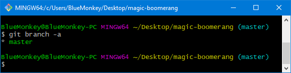Creating Branches
- Call git branch feature_A
- Call git branch feature_B
- Call git log -1
- Call git branch -a 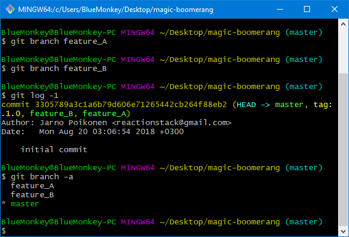
- By calling git branch <NewBranchName>, a new branch is created.
- Here, two new branches were created named feature_A, feature_B.
- By calling git log -1, the topmost commit of master is shown in the terminal.
- In the parentheses next to the commit hash, there's a list of objects that point to this commit, these are:
- master - the topmost commit object of the branch named master
- tag: v0.1.0 - the annotated tag object that was created earlier in the tutorial
- feature_A - the topmost commit object of the newly created branch "feature_A"
- feature_B - the topmost commit object of the newly created branch "feature_B"
- And finally git branch -a shows the existing branches.
- All three branches are equivalent in history at this point.
- When creating a branch with the git branch <NewBranchName> -command, the branch is sprouted on the commit object the user is currently checked out to.
- The currently checked out branch in this scenario was the topmost commit of master branch.
Checking out to a Branch
- User is currently checked out to a branch named feature_A.
Call git checkout feature_A
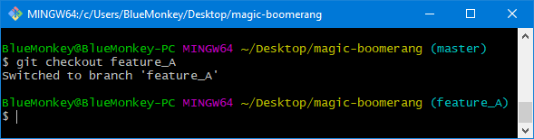Branch Structure
- Create a new file named fa1.
- Note that the file structure in this view is that of feature_A, as that is the currently checked out branch.
- Pretend as if fa1 -file is the first development step for "feature A" that gets committed.
- Call git add fa1
- Call git commit -m "Begin development of feature A." 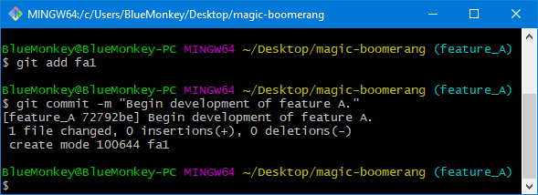
- Now, of the three branches (master, feature_B, feature_A), feature_A is ahead of the others by one commit.
- Currently the branch structure looks like this: 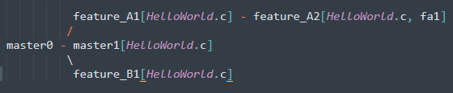
- Numbers denote the commit count.
- master0 was the initial state of the repository with zero files in the working directory.
- master1, feature_A1, feature_B1, all have the HelloWorld.c and just the HelloWorld.c. In fact they all point to same commit object.
- feature_A2 has the HelloWorld.c, but also the fa1 -file.

Working Directory Contents Change Between Branch Checkouts and Commit Checkouts
- As one can see, the contents of the working directory changed to that of branch feature_B.
- The commit the HEAD is pointing at dictates what is seen in the working directory.
- When git checkout is targeting a branch, the HEAD always points to the topmost branch commit and will check out on that commit.
- After git checkout, the working directory will change to reflect the snapshot.
- By choosing a commit hash other than the topmost branch commit, user can checkout to somewhere in the middle of the branch or even its root.
- User needs to be a aware that a git checkout to a lower commit in a branch will cause the HEAD to become "detached".
- Detached HEAD allows user to experiment changes at the chosen snapshot, by making new commits.
- Any commits made while in detached HEAD mode, will become discarded when git checkout to existing branch.
- To save the commits made while in the detached HEAD mode, user must create a new branch and git checkout there.
- If a user finds themselves in the detached HEAD mode by accident and want out, a normal git checkout <ExistingBranchName> gets them on top of the chosen branch, because the HEAD always targets the topmost commit of a branch when git checkout is called.
Call git checkout feature_B
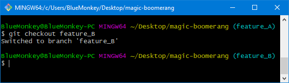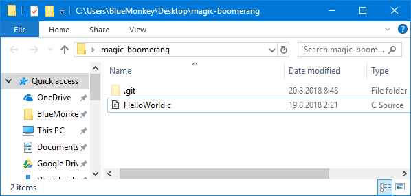
Detached HEAD
- Call git log
- Type git checkout
- Select the commit hash of the initial commit by double clicking it.
- Hold left shift and press insert to copy-paste the hash, finally make the call by pressing enter. 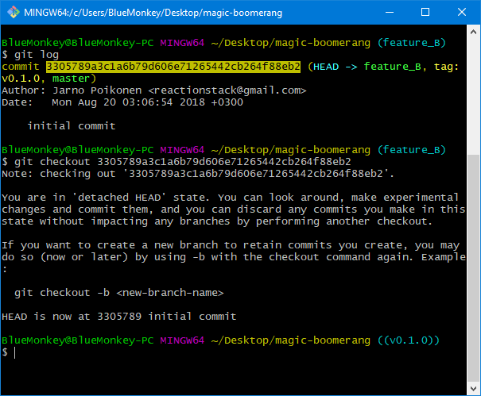
- By specifically calling git checkout on a commit by its raw hash value - regardless if that hash was pointed-to by branches or tag objects - user will enter detached HEAD mode in which he is not able to keep any forwarding commits without making a new branch as well.
- Notice that even though it was the raw hash that was being checked out to, git noticed that there existed a tag to the very same hash and decided to view the tag name instead of the raw hash. ((v0.1.0))
- It's like a subtle hint from git: "for future reference, please do yourself a favor and checkout to this tag object instead of the raw hash, the tag object which you, yourself created for this particular purpose."
- Had the tag object not been there, the checkout "branch name" would've been the raw hash instead of (v0.1.0).
- Virtually it doesn't matter what the checkout name is, but simpler is more convenient to type.
Branch Deletion
- Sometimes development on a feature or bug fix does not pan out at all, then it makes sense to just delete the branch.
- Can't delete branches user is currently checkout to.
- Call git checkout master
- Call git branch -D feature_B
- Call git branch -a 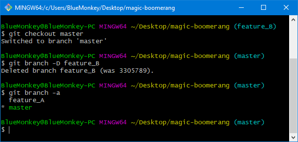 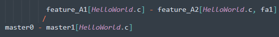
- Only branches master and feature_A remain.
Call git branch -D feature_B
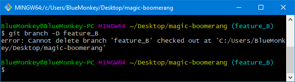